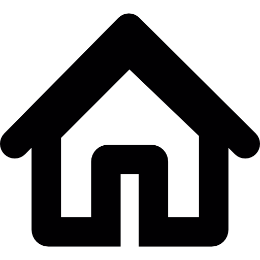

Réalisation d'un stage de 2 mois au sein de MVP durant lequel j'ai participé au développement et à la maintenance d'applications professionnelles. Cette expérience m'a permis de découvrir les contraintes d'un environnement de développement réel, le travail en équipe ainsi que les bonnes pratiques de conception et de maintenance logicielle.
Première année de BUT Informatique
Suite à un manque d'interêt en physique/chimie, prise d'une année sabatique ayant pour but de trouver le domaine qui m'intéresse le plus
Réussite des concours Geipi et Avenir grâce à un apprentissage en autonomie de la Physique / Chimie
Baccalauréat obtenu mention Très bien avec comme spécialités Mathématiques, LLCE (Anglais) et HLP (Philosophie)
Réalisation de 2 stages de 3ème ayant pour but de découvrir le monde professionnel
Développement d'une application destinée aux proches aidants de personnes en situation de perte d'autonomie. L'objectif est de centraliser les informations importantes, d'aider à l'organisation quotidienne et de faciliter le suivi des tâches liées à l'accompagnement de la personne aidée. Le projet inclut notamment la gestion de documents et des fonctionnalités d'automatisation pour simplifier l'utilisation.
Concevoir une solution intuitive permettant de réduire la charge mentale des aidants en regroupant les informations essentielles dans un seul outil numérique.
Participation à la conception globale de l'application et au développement de fonctionnalités clés, notamment le coffre-fort numérique et un système de reconnaissance et classification automatique de documents.
Projet universitaire portant sur une application existante composée d'une partie web en PHP et d'une application mobile en Java. Le code contenait volontairement des anomalies fonctionnelles et techniques. Le travail consistait à analyser l'existant, identifier les bugs, les corriger, puis implémenter des évolutions fonctionnelles en respectant un cahier des charges.
Garantir la stabilité et la fiabilité de l'application tout en ajoutant de nouvelles fonctionnalités demandées, dans un contexte proche d'un projet de maintenance en entreprise.
Travail en équipe avec répartition des bugs et des évolutions à traiter, puis intégration et validation collective des corrections apportées.
Analyse du code source, identification des causes des dysfonctionnements, correction de bugs sur les parties web et mobile, ainsi que participation aux phases de test et validation.
Développement d'une application de bureau permettant la gestion d'événements pour des associations locales. Le système permet la planification des événements, la gestion des participants ainsi que l'organisation logistique (notamment la gestion des véhicules et des ressources associées).
Concevoir une solution complète permettant de simplifier l'organisation d'événements associatifs en automatisant la gestion des participants et des ressources.
Projet réalisé en équipe de 5 personnes avec répartition des responsabilités selon les modules fonctionnels, intégration continue et coordination des livrables.
Rôle de chef de projet, participation à la modélisation UML, coordination de l'équipe et contribution au développement de plusieurs fonctionnalités.